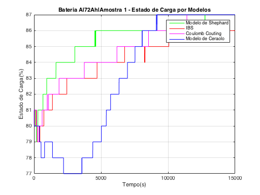
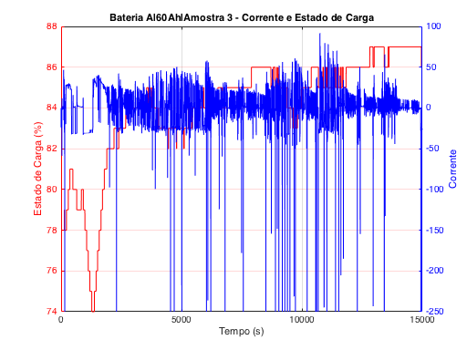

Teste de Baterias de 72 Ah
Bateria A
Amosttra1 Amostra 1 - OK
Variância da diferença para os valores do IBS para a Amostra 1
Modelo de Ceraolo: 6.70
Modelo de Shephard: 0.56
Modelo Counting Coulomb: 0.25
 Amostra 2
Variância da diferença para os valores do IBS para a Amostra 2
Modelo de Ceraolo: 0.74
Modelo de Shephard: 0.19
Modelo Counting Coulomb: 0.25
Amostra 3
Variância da diferença para os valores do IBS para a Amostra 3
Modelo de Ceraolo: 0.64
Modelo de Shephard: 1.46
Modelo Counting Coulomb: 0.42
Bateria B
Variância da diferença para os valores do IBS para a Amostra 1
Modelo de Ceraolo: 1.40
Modelo de Shephard: 0.77
Modelo Counting Coulomb: 1.02
Amostra 5
Variância da diferença para os valores do IBS para a Amostra 2
Modelo de Ceraolo: 2.02
Modelo de Shephard: 3.20
Modelo Counting Coulomb: 0.26
Variância da diferença para os valores do IBS para a Amostra 3
Modelo de Ceraolo: 8.78
Modelo de Shephard: 8.49
Modelo Counting Coulomb: 8.87
Bateria C
Variância da diferença para os valores do IBS para a Amostra 1
Modelo de Ceraolo: 0.92
Modelo de Shephard: 0.93
Modelo Counting Coulomb: 1.26
Amostra 8
Variância da diferença para os valores do IBS para a Amostra 2
Modelo de Ceraolo: 1.63
Modelo de Shephard: 1.11
Modelo Counting Coulomb: 1.82
Amostra 9
Variância da diferença para os valores do IBS para a Amostra 3
Modelo de Ceraolo: 1.08
Modelo de Shephard: 2.42
Modelo Counting Coulomb: 2.10
Teste de Baterias de 60 Ah
Bateria A
Variância da diferença para os valores do IBS para a Amostra 1
Modelo de Ceraolo: 1.41
Modelo de Shephard: 0.67
Modelo Counting Coulomb: 0.17
Amostra 11
Variância da diferença para os valores do IBS para a Amostra 2
Modelo de Ceraolo: 2.43
Modelo de Shephard: 2.35
Modelo Counting Coulomb: 0.78
Amostra12
Variância da diferença para os valores do IBS para a Amostra 3
Modelo de Ceraolo: 3.15
Modelo de Shephard: 3.27
Modelo Counting Coulomb: 0.49
Bateria B
 Amostra 13
Variância da diferença para os valores do IBS para a Amostra 1
Modelo de Ceraolo: 2.97
Modelo de Shephard: 2.87
Modelo Counting Coulomb: 2.67


Amostra 14
Variância da diferença para os valores do IBS para a Amostra 2
Modelo de Ceraolo: 2.28
Modelo de Shephard: 0.41
Modelo Counting Coulomb: 0.40
Amostra 15
Variância da diferença para os valores do IBS para a Amostra 3
Modelo de Ceraolo: 1.08
Modelo de Shephard: 0.97
Modelo Counting Coulomb: 0.35

Bateria C
Variância da diferença para os valores do IBS para a Amostra 1
Modelo de Ceraolo: 1.07
Modelo de Shephard: 0.72
Modelo Counting Coulomb: 0.51
Amostra 17
Variância da diferença para os valores do IBS para a Amostra 2
Modelo de Ceraolo: 0.64
Modelo de Shephard: 0.20
Modelo Counting Coulomb: 0.13
Amostra 18
Variância da diferença para os valores do IBS para a Amostra 3
Modelo de Ceraolo: 0.64
Modelo de Shephard: 1.83
Modelo Counting Coulomb: 0.37